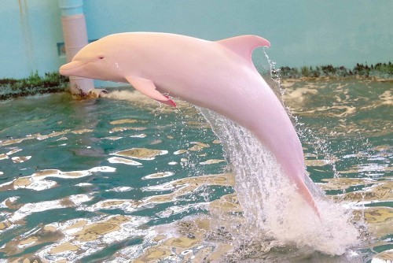
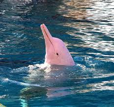

| This is a video about Pink River Dolphins. |
 Help us save the Pink river dolphins please~ they are very special animals that should get help they are one of the most flexable animals and use echolocation to see because Pink River Dolphins are nearly blind, Please help them with making the river less filthy and making their habattat clean and good for them. |
|
| |
 | |